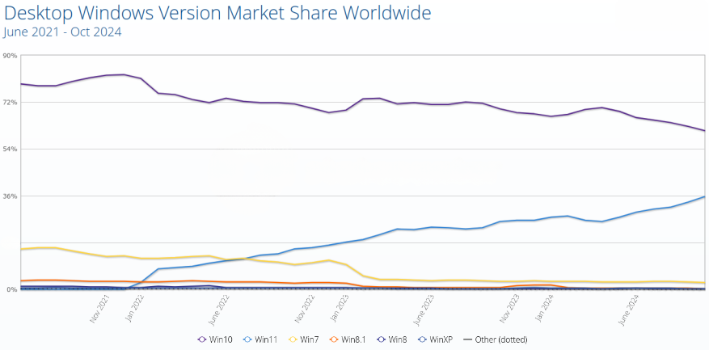
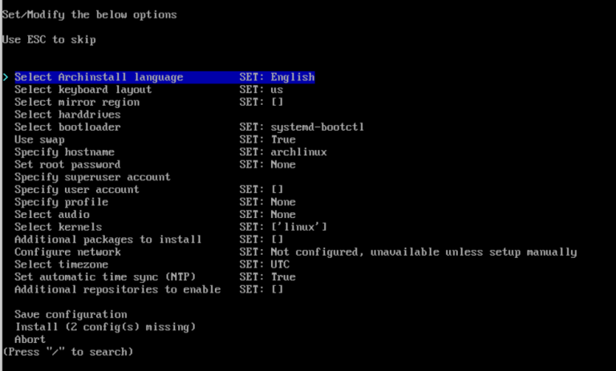

Why I wanted to move from windows to Linux?
Windows 10 is not being supported from October 2025
I used to enjoy using windows in particular Windows 10 and Windows 7, however, Microsoft has said that they will be suspending all updates to Windows 10 in October of this year (2025). They’re newer OS Windows 11 has not really appealed to me because of several countless claims and concerns about “Windows Recall”. There have been countless concerns regarding the security of this feature and to be truthfully honest I don’t want Microsoft Windows to be taking a snapshot of my computer every 5 minutes and with only a very convoluted way of actually turning off this feature.
I also don’t agree with some of the other telemetry information that they are prepared to collect from you as a user (only to later be sold onto advertising companies). The amount of “bloated” programs that come with Microsoft Windows has also increased. And not to mention the fact that it is unable to customise a lot of the desktop environment to fit your exact needs (without some ridiculously hacky way of doing so).
At the time of writing this blog post, Windows 10 still holds the majority of the market share across all windows versions (even though it was released in October 5th 2021)

In, 2024 I was using Linux more and more. Today, I realised I haven’t needed or wanted to use Windows now for more than half a year and therefore, I have decided that I will completely get rid of windows entirely.
This has a few benefits (not to mention the freed up storage space). Here are some of the most benefits I have found while searching about this:
| Feature | Linux | Windows |
|---|---|---|
| Cost | Free (most distributions) | Requires a paid license |
| Open Source | Open-source, modifiable | Proprietary, closed-source |
| Customizability | Highly customizable, from UI to kernel | Limited customization options |
| Security | More secure, fewer malware targets | Frequent target for malware |
| Performance | Lightweight, runs on older hardware | Resource-intensive, needs powerful hardware |
| Software | Vast free/open-source repository | Larger proprietary software ecosystem |
| Privacy | Minimal data collection | Known for telemetry and data collection |
| Community Support | Strong global community, free support | Official support, often paid |
| Development | Preferred for development and servers | Popular for commercial apps, gaming |
| Updates | Frequent, non-disruptive updates | Intrusive updates, may require reboots |
| Stability | Highly stable, long uptime | Prone to crashes, slowdowns post-updates |
| Diversity | Wide variety of distros for different needs | Limited versions (Home, Pro, Enterprise) |
| Networking | Robust built-in networking tools | Less versatile without third-party tools |
Now that I got convinced, it was important for me to choose a Linux distribution that I could configure from the ground up. I wanted a system that would enable me to streamline a lot of the processes that take a lot of time to achieve on Windows.
The first major area to streamline is quite simply mouse usage. Using the mouse to click things every day takes a lot of time and in reality isn’t really necessary. I wanted a system that would allow me to (without even leaving the keyboard once) open a browser some applications, like slack, calendar etc. and switch between workspaces or desktops without lifting my hands of the keyboard.
I decided to jump into the deep end and start with Arch Linux. My thoughts were that if I truly want a system that is completely customizable then I would need a Linux distribution that would be as “barebones” as possible. This would be a system whereby I would really learn the full ins and outs about the Linux OS all the while having arguable the most extensive package managers available right now pacman
Arch Linux
The beauty I found with Arch Linux is that you can really configure it to exactly how you want it to be; don’t want a task bar, no problem, want automatic window tiling, no problem, don’t want any pre-installed programs, you guessed it no problem.
The installation of Arch Linux is actually relatively straightforward now, since the disk image has a handy menu in which you can install Arch based on a number of predefined options

Even going the route of completely installing from scratch is straightforward with a myriad of online tutorials and helpful videos to help you get started. Here is a GitHub gist I found recently that has some great documentation and also on the Arch website itself
This is another plus, the Arch Linux community is full of helpful guides, wiki’s and people who’d be quick to point out what you’ve done is simply wrong (I haven’t encountered that before I promise 😉)
Desktop environment
Arguable a separate topic on its own
Because Arch Linux has no desktop installed by default, you can really choose what kind of environment that you’d like to use
Here is the list of official ones from the Arch wiki : Budgie, Cinnamon, COSMIC, Cutefish, Deepin, Enlightenment, GNOME, GNOME Flashback, KDE Plasma, LXDE, LXQt, MATE, Pantheon, Phosh, Sugar, UKUI, Xfce
Desktop environments provide a faily “pre-built” desktop meaning that these are super user-friendly. My favourite would be Gnome and Xfce, but this is really also down to individual preference
Window managers
Again arguably a separate topic on its own
- Window managers on the other hand are not whole desktops but instead are just window managers. This means that they are just managing windows and that’s it. Window managers then are a part of desktop environments, but that desktop environments are not a part of window mangers. This of window managers like the barebones to a working desktop
| Feature | Desktop Environment | Window Manager |
|---|---|---|
| Scope | Complete interface suite | Manages windows only |
| Components | DE includes a WM | WM doesn’t include a DE |
| User Experience | Cohesive and polished | Minimalist and focused |
| Ease of Use | Beginner-friendly | Requires configuration |
| Performance | Can be resource-intensive | Lightweight |
| Examples | GNOME, KDE, Xfce | i3, Hyprland, bspwm |
There are many different environments/ configurations that can be used with Arch Linux I hope to document some of the configuration that I have been using recently on a desktop environment called Hyprland